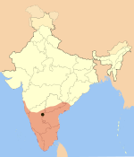

| El Imperio recibe el nombre oficial que se le daba por entonces a su capital, Vijayanagara (en español: La Ciudad de la Victoria), cuyas ruinas, declaradas Patrimonio de la Humanidad por la Unesco, rodean la localidad actualmente conocida como Hampi, en el estado de Karnataka. Los registros locales y las crónicas de viajeros de la época —como Duarte Barbosa, Niccolò Da Conti o Domingo Paes y Fernão Nunes, quienes, basándose en sus experiencias en la India dieron lugar a la Chronica dos Reis de Bisnaga—, nos brindan información crucial sobre su historia. Las excavaciones arqueológicas revelan el poder y riqueza de este imperio. Su legado incluye gran cantidad de monumentos dispersos por todo el sur de la India, si bien los restos más importantes son los de Hampi. Las milenarias escuelas arquitectónicas de la India se combinaron, creando en Vijayanagara un estilo nuevo, propio, que se volcó en los templos hindúes erigidos durante la época, primero en el Decán y después entre las demás regiones del imperio mediante el uso de los materiales de que se disponía según el lugar. Las estructuras más antiguas muestran influencias del sultanato de Delhi. Una administración eficiente e intensos intercambios comerciales marítimos proveyeron al imperio de los últimos adelantos tecnológicos, como el empleo de nuevos sistemas de regadío. La corte imperial incentivó las bellas artes, provocando el resurgir de la literatura en kannada, telugú, tamil y sánscrito, mientras que la música carnática evolucionó desde posturas que durante siglos habían permanecido estáticas hasta adoptar las reglas que aún hoy se utilizan. El Imperio Vijayanagara marcó un punto de inflexión en la historia del subcontinente, que trascendió los regionalismos y promovió el hinduismo como factor de unión. |  |
esto es una descripcion de nosotros una empresa que hace mucha informacion para trabajos practicos
esto es un contacto cualquiera